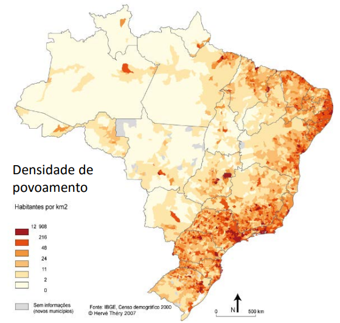
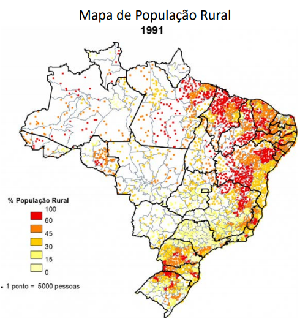
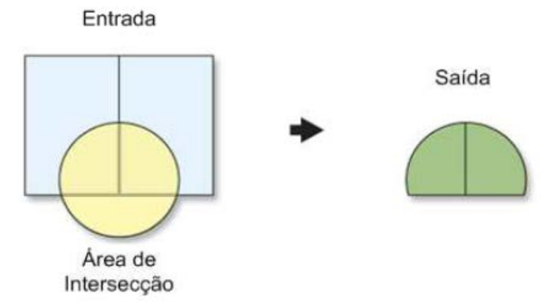
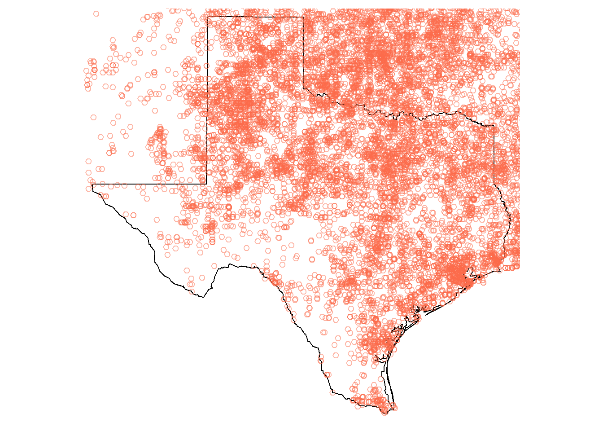
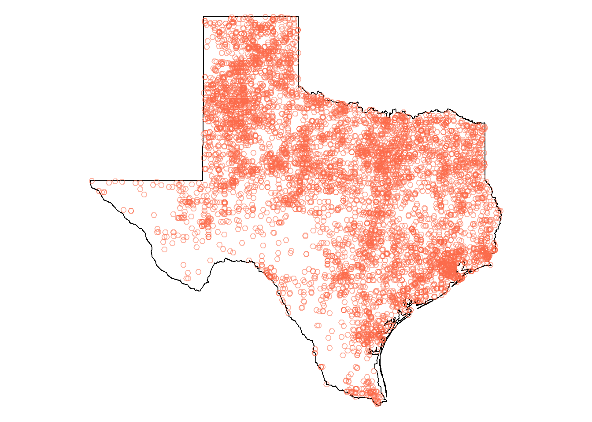
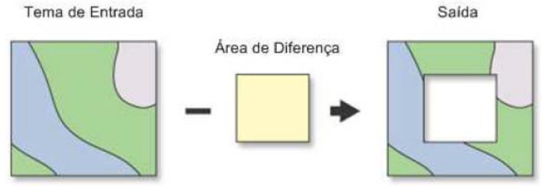

Dados espaciais no R
Last updated: 07 novembro, 2020
Análise Espacial: O que representar?
Entidades realmente existentes (visíveis):
Exemplos: edificações, ruas.
Conceitos abstratos (invisíveis):
Exclusão/inclusão social, violência, pobreza/riqueza, desigualdade
Inclui transformações, manipulações e métodos que podem ser aplicados aos dados geográficos para adicionar valor a eles, apoiar decisões e revelar padrões e anomalias que não são óbvios à primeira vista.
Métodos de suporte ao processo decisório
Visualização de fenômenos sociais no espaço
Mapas coropléticos

Mapas de pontos

Representação de fluxos

Mapas de calor

Cartogramas

Símbolos proporcionais

Algumas operações com dados espaciais
Agregação (Dissolve)
- Elimina divisões indesejáveis considerando os valores de atributos.

União (Merge)
- Combina layers diferentes

Interseção espacial e operações de recorte
- Interseção - atributos de todas as feições estarão no arquivo de saída considerando a sobreposição

- Recortar - somente atributos das feições de entrada estarão no arquivo de saída

Para gerar uma análise estatística exploratória dos pontos, utilize:
## TORNADX020 YEAR NUM STATE MONTH DAY DATE
## Min. : 1 Min. :1950 Min. : 1.00 48 : 7122 Min. : 1.00 Min. : 1.0 4/3/1974 : 128
## 1st Qu.:11734 1st Qu.:1970 1st Qu.: 7.00 40 : 2959 1st Qu.: 5.00 1st Qu.: 8.0 6/24/2003: 95
## Median :23466 Median :1983 Median : 18.00 20 : 2905 Median : 6.00 Median :16.0 1/21/1999: 86
## Mean :23466 Mean :1982 Mean : 29.23 12 : 2788 Mean : 6.02 Mean :15.7 5/30/2004: 81
## 3rd Qu.:35199 3rd Qu.:1995 3rd Qu.: 38.00 31 : 2288 3rd Qu.: 7.00 3rd Qu.:23.0 5/4/2003 : 81
## Max. :46931 Max. :2004 Max. :232.00 19 : 1915 Max. :12.00 Max. :31.0 5/18/1995: 79
## (Other):26954 (Other) :46381
## TOR_NO NO_STS STATE_TOR SEGNO STLAT STLON SPLAT
## Min. : 1.0 Min. :1.000 Min. :0.0000 Min. :1 Min. :18.20 Min. : 64.90 Min. : 0.00
## 1st Qu.: 214.0 1st Qu.:1.000 1st Qu.:1.0000 1st Qu.:1 1st Qu.:33.13 1st Qu.: 86.85 1st Qu.: 0.00
## Median : 439.0 Median :1.000 Median :1.0000 Median :1 Median :37.08 Median : 94.23 Median : 0.00
## Mean : 483.9 Mean :1.007 Mean :0.9932 Mean :1 Mean :37.14 Mean : 93.07 Mean :16.59
## 3rd Qu.: 695.0 3rd Qu.:1.000 3rd Qu.:1.0000 3rd Qu.:1 3rd Qu.:41.07 3rd Qu.: 98.73 3rd Qu.:36.20
## Max. :1817.0 Max. :3.000 Max. :1.0000 Max. :1 Max. :61.02 Max. :163.53 Max. :61.02
##
## SPLON LGTH WIDTH FATAL INJ DAMAGE
## Min. : 0.00 Min. : 0.00 Min. : 0.00 Min. : 0.00000 Min. : 0.000 Min. : 0.000
## 1st Qu.: 0.00 1st Qu.: 1.00 1st Qu.: 3.00 1st Qu.: 0.00000 1st Qu.: 0.000 1st Qu.: 0.000
## Median : 0.00 Median : 5.00 Median : 9.00 Median : 0.00000 Median : 0.000 Median : 2.000
## Mean : 40.96 Mean : 35.09 Mean : 23.55 Mean : 0.09987 Mean : 1.714 Mean : 2.271
## 3rd Qu.: 91.38 3rd Qu.: 27.00 3rd Qu.: 21.00 3rd Qu.: 0.00000 3rd Qu.: 0.000 3rd Qu.: 4.000
## Max. :163.53 Max. :3000.00 Max. :999.00 Max. :116.00000 Max. :1740.000 Max. :1000.000
##
## F_SCALE coords.x1 coords.x2 geometry
## Min. :-9.0000 Min. :-163.53 Min. :18.20 POINT :46931
## 1st Qu.: 0.0000 1st Qu.: -98.73 1st Qu.:33.13 epsg:NA : 0
## Median : 1.0000 Median : -94.23 Median :37.08 +proj=long...: 0
## Mean : 0.4819 Mean : -93.07 Mean :37.14
## 3rd Qu.: 1.0000 3rd Qu.: -86.85 3rd Qu.:41.07
## Max. : 5.0000 Max. : -64.90 Max. :61.02
## ## Geometry set for 46931 features
## geometry type: POINT
## dimension: XY
## bbox: xmin: -163.53 ymin: 18.2 xmax: -64.9 ymax: 61.02
## CRS: +proj=longlat +ellps=WGS84
## First 5 geometries:## POINT (-88.2 30.67)## POINT (-87.92 30.7)## POINT (-94.37 34.4)## POINT (-92.4 34.48)## POINT (-92.95 33.27)Se for interessante analisar a incidência de tornados em uma determinada área, pode ser feito:

Há diferentes formas de recortar um dado espacial. A forma mais simples é usar a extensão espacial de um objeto espacial como um índice para gerar um subconjunto de outro. Veja o exemplo.
## although coordinates are longitude/latitude, st_intersects assumes that they are planar
## although coordinates are longitude/latitude, st_intersects assumes that they are planarEntretanto, em alguns contextos, é interessante combinar atributos de diferentes conjuntos de dados com base na localização espacial. A função st_intersection do sf permite gerar a informação conforme exemplo:
## although coordinates are longitude/latitude, st_intersection assumes that they are planar## Warning: attribute variables are assumed to be spatially constant throughout all geometries
Diferença
- É o inverso da interseção

Buffer
Em algumas situações, é necessário identificar eventos ou feições que também ocorreram próximas à área de interesse. Eventos ambientais, como tornados, também não estão contidos pelos limites administrativos. Assim, a operação do tipo buffer auxilia na construção dessa área onde podem acontecer os eventos.
No pacote sf, tem-se a função st_buffer.
Se for necessário entender a dinâmica de formação dos tornados, seguindo o exemplo anterior, em até 25 km das fronteiras com o estado do Texas, é possível fazer a seguinte análise:
União espacial
Em determinadas análises, faz-se necessária a quando é interessante que as áreas de determinados estados, como no exemplo acima, sejam unidas a fim de analisar as feições internas a esse polígono maior. Essa operação pode ser realizada considerando a função st_union e st_combine.
A função considerada para converter o resultado sfc da união realizada pela função st_union para um objeto sfantes de iniciar a representação pelas funções em tmap.
Junção
Junção relacional: Combina o conteúdo de duas tabelas usando uma chave comum.
Operação ponto em polígono: Compara as propriedades dos pontos com as das áreas onde estão contidos.
Sobreposição de feições: Permite determinar se duas áreas se sobrepõe, determinar a área de sobreposição e definir a área formada pela sobreposição.
Junção relacional
- Junção relacional: combina o conteúdo de duas tabelas usando uma chave comum - NÃO É ESPACIAL!

Junção espacial
Operação ponto em polígono: compara as propriedades dos pontos com as das áreas onde estão contidos.
Sobreposição de feições: permite determinar se duas áreas se sobrepõe, determinar a área de sobreposição e definir a área formada pela sobreposição.

Seleção de polígonos que contêm pontos
Essa primeira abordagem só permite a seleção de polígonos que contenham pontos. A partir dessa operação, o dataframe do objeto de polígonos não é modificado. Essa operação apenas permite a seleção das feições.
## 1 2 3 4 5 6
## 79 341 87 1121 1445 549## [1] "1" "2" "3" "4" "5" "6" "7" "8" "9" "10" "11" "12" "13" "14" "15" "16" "17" "18" "19" "20" "21" "22" "23"
## [24] "24" "25" "26" "27" "28" "29" "30" "31" "32" "33" "34" "35" "36" "37" "38" "39" "40" "41" "42" "43" "44" "45" "46"
## [47] "47" "48" "50"Para cômputo da junção espacial, faz-se necessário o uso da função st_join. Essa função promove a adição de uma nova coluna no objeto x a partir de outro y. Por padrão, a junção acontece da esquerda para a direita.
## although coordinates are longitude/latitude, st_intersects assumes that they are planar
## although coordinates are longitude/latitude, st_intersects assumes that they are planar## Simple feature collection with 6 features and 24 fields
## geometry type: POINT
## dimension: XY
## bbox: xmin: -94.37 ymin: 30.67 xmax: -87.92 ymax: 34.48
## CRS: +proj=longlat +ellps=WGS84
## TORNADX020 YEAR NUM STATE MONTH DAY DATE TOR_NO NO_STS STATE_TOR SEGNO STLAT STLON SPLAT SPLON LGTH WIDTH FATAL
## 0 1 1950 1 01 4 18 4/18/1950 53 1 1 1 30.67 88.20 30.85 88.10 140 30 0
## 1 2 1950 2 01 4 18 4/18/1950 54 1 1 1 30.70 87.92 0.00 0.00 20 45 0
## 2 3 1950 1 05 1 13 1/13/1950 4 1 1 1 34.40 94.37 0.00 0.00 6 5 1
## 3 4 1950 2 05 2 12 2/12/1950 19 1 1 1 34.48 92.40 0.00 0.00 1 30 0
## 4 5 1950 3 05 2 12 2/12/1950 23 1 1 1 33.27 92.95 33.35 92.95 57 30 0
## 5 6 1950 4 05 3 26 3/26/1950 33 1 1 1 34.12 93.07 34.32 92.88 174 45 0
## INJ DAMAGE F_SCALE coords.x1 coords.x2 STATE_NAME geometry
## 0 15 4 3 -88.20 30.67 Alabama POINT (-88.2 30.67)
## 1 0 3 2 -87.92 30.70 Alabama POINT (-87.92 30.7)
## 2 1 3 3 -94.37 34.40 Arkansas POINT (-94.37 34.4)
## 3 0 3 2 -92.40 34.48 Arkansas POINT (-92.4 34.48)
## 4 0 4 2 -92.95 33.27 Arkansas POINT (-92.95 33.27)
## 5 3 4 2 -93.07 34.12 Arkansas POINT (-93.07 34.12)Dados Matriciais
Operações de sobreposição são mais simples. Atributos de diferentes matrizes podem ser combinados por meio de álgebra de mapas.


Qual utilizar?

Esta obra esta licenciada sob Licenca Creative Commons Atribuicao-Compartilha Igual 4.0 Internacional.